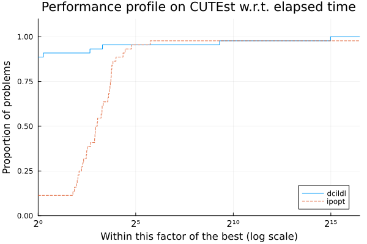
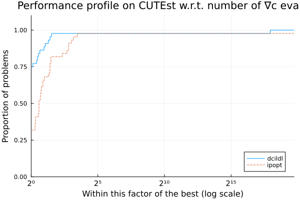
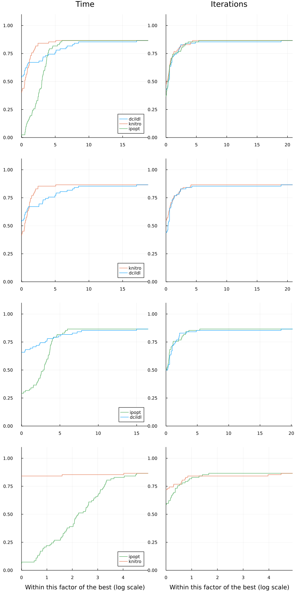

Benchmarks
CUTEst benchmark
With a JSO-compliant solver, such as DCI, we can run the solver on a set of problems, explore the results, and compare to other JSO-compliant solvers using specialized benchmark tools. We are following here the tutorial in SolverBenchmark.jl to run benchmarks on JSO-compliant solvers.
using CUTEst Downloading artifact: sifcollectionTo test the implementation of DCI, we use the package CUTEst.jl, which implements CUTEstModel an instance of AbstractNLPModel.
using SolverBenchmarkLet us select equality-constrained problems from CUTEst with a maximum of 100 variables or constraints. After removing problems with fixed variables, examples with a constant objective, and infeasibility residuals.
_pnames = CUTEst.select_sif_problems(
max_var = 100,
min_con = 1,
max_con = 100,
only_free_var = true,
only_equ_con = true,
objtype = 3:6
)
#Remove all the problems ending by NE as Ipopt cannot handle them.
pnamesNE = _pnames[findall(x->occursin(r"NE\b", x), _pnames)]
pnames = setdiff(_pnames, pnamesNE)
cutest_problems = (CUTEstModel(p) for p in pnames)
length(cutest_problems) # number of problems44We compare here DCISolver with Ipopt (Wächter, A., & Biegler, L. T. (2006). On the implementation of an interior-point filter line-search algorithm for large-scale nonlinear programming. Mathematical programming, 106(1), 25-57.), via the NLPModelsIpopt.jl thin wrapper, with DCISolver on a subset of CUTEst problems.
using DCISolver, NLPModelsIpoptTo make stopping conditions comparable, we set Ipopt's parameters dual_inf_tol=Inf, constr_viol_tol=Inf and compl_inf_tol=Inf to disable additional stopping conditions related to those tolerances, acceptable_iter=0 to disable the search for an acceptable point.
#Same time limit for all the solvers
max_time = 1200. #20 minutes
tol = 1e-5
solvers = Dict(
:ipopt => nlp -> ipopt(
nlp,
print_level = 0,
dual_inf_tol = Inf,
constr_viol_tol = Inf,
compl_inf_tol = Inf,
acceptable_iter = 0,
max_cpu_time = max_time,
x0 = nlp.meta.x0,
tol = tol,
),
:dcildl => nlp -> dci(
nlp,
nlp.meta.x0,
linear_solver = :ldlfact,
max_time = max_time,
max_iter = typemax(Int64),
max_eval = typemax(Int64),
atol = tol,
ctol = tol,
rtol = tol,
),
)
stats = bmark_solvers(solvers, cutest_problems)Dict{Symbol, DataFrames.DataFrame} with 2 entries:
:dcildl => 44×41 DataFrame…
:ipopt => 44×42 DataFrame…The function bmark_solvers return a Dict of DataFrames with detailed information on the execution. This output can be saved in a data file.
using JLD2
@save "ipopt_dcildl_$(string(length(pnames))).jld2" statsThe result of the benchmark can be explored via tables,
pretty_stats(stats[:dcildl])┌─────────────┬────────┬──────────┬────────┬────────┬────────┬─────────────┬───────────┬──────────────┬─────────┬───────────┬─────────────┬───────────┬────────────┬────────────┬────────────────┬────────────────┬────────────┬─────────────┬───────────┬───────────────┬───────────────┬─────────────┬─────────────────┬─────────────────┬──────────────┬──────────────────┬──────────────────┬────────────┬─────────────┬─────────────┬──────────────┬────────────────┬────────────────────┬──────────────────────┬───────────────────────┬─────────────────────┬──────────────────────┬──────────────────────┬───────────┬────────────┐
│ solver_name │ id │ name │ nvar │ ncon │ nequ │ status │ objective │ elapsed_time │ iter │ dual_feas │ primal_feas │ neval_obj │ neval_grad │ neval_cons │ neval_cons_lin │ neval_cons_nln │ neval_jcon │ neval_jgrad │ neval_jac │ neval_jac_lin │ neval_jac_nln │ neval_jprod │ neval_jprod_lin │ neval_jprod_nln │ neval_jtprod │ neval_jtprod_lin │ neval_jtprod_nln │ neval_hess │ neval_hprod │ neval_jhess │ neval_jhprod │ neval_residual │ neval_jac_residual │ neval_jprod_residual │ neval_jtprod_residual │ neval_hess_residual │ neval_jhess_residual │ neval_hprod_residual │ extrainfo │ lagrangian │
├─────────────┼────────┼──────────┼────────┼────────┼────────┼─────────────┼───────────┼──────────────┼─────────┼───────────┼─────────────┼───────────┼────────────┼────────────┼────────────────┼────────────────┼────────────┼─────────────┼───────────┼───────────────┼───────────────┼─────────────┼─────────────────┼─────────────────┼──────────────┼──────────────────┼──────────────────┼────────────┼─────────────┼─────────────┼──────────────┼────────────────┼────────────────────┼──────────────────────┼───────────────────────┼─────────────────────┼──────────────────────┼──────────────────────┼───────────┼────────────┤
│ dcildl │ 1 │ BT1 │ 2 │ 1 │ 0 │ first_order │ -1.00e+00 │ 2.44e+00 │ 3 │ 2.85e-14 │ 2.85e-10 │ 10 │ 10 │ 12 │ 0 │ 0 │ 0 │ 0 │ 3 │ 0 │ 0 │ 32 │ 0 │ 0 │ 28 │ 0 │ 0 │ 3 │ 0 │ 0 │ 0 │ 0 │ 0 │ 0 │ 0 │ 0 │ 0 │ 0 │ │ -1.00e+00 │
│ dcildl │ 2 │ BT10 │ 2 │ 2 │ 0 │ first_order │ -1.00e+00 │ 1.40e-04 │ 0 │ 1.05e-14 │ 4.40e-09 │ 7 │ 7 │ 7 │ 0 │ 0 │ 0 │ 0 │ 0 │ 0 │ 0 │ 39 │ 0 │ 0 │ 39 │ 0 │ 0 │ 0 │ 0 │ 0 │ 0 │ 0 │ 0 │ 0 │ 0 │ 0 │ 0 │ 0 │ │ -1.50e+00 │
│ dcildl │ 3 │ BT11 │ 5 │ 3 │ 0 │ first_order │ 8.25e-01 │ 4.28e-04 │ 13 │ 7.75e-09 │ 8.31e-09 │ 21 │ 20 │ 22 │ 0 │ 0 │ 0 │ 0 │ 13 │ 0 │ 0 │ 106 │ 0 │ 0 │ 106 │ 0 │ 0 │ 13 │ 0 │ 0 │ 0 │ 0 │ 0 │ 0 │ 0 │ 0 │ 0 │ 0 │ │ 8.25e-01 │
│ dcildl │ 4 │ BT12 │ 5 │ 3 │ 0 │ first_order │ 6.19e+00 │ 6.30e-01 │ 5 │ 2.91e-06 │ 1.26e-12 │ 10 │ 10 │ 15 │ 0 │ 0 │ 0 │ 0 │ 5 │ 0 │ 0 │ 79 │ 0 │ 0 │ 80 │ 0 │ 0 │ 5 │ 3 │ 0 │ 0 │ 0 │ 0 │ 0 │ 0 │ 0 │ 0 │ 0 │ │ 6.19e+00 │
│ dcildl │ 5 │ BT2 │ 3 │ 1 │ 0 │ first_order │ 3.26e-02 │ 4.68e-04 │ 27 │ 6.49e-07 │ 7.28e-12 │ 45 │ 36 │ 54 │ 0 │ 0 │ 0 │ 0 │ 27 │ 0 │ 0 │ 106 │ 0 │ 0 │ 99 │ 0 │ 0 │ 27 │ 0 │ 0 │ 0 │ 0 │ 0 │ 0 │ 0 │ 0 │ 0 │ 0 │ │ 3.26e-02 │
│ dcildl │ 6 │ BT3 │ 5 │ 3 │ 0 │ first_order │ 4.09e+00 │ 1.99e-04 │ 3 │ 2.54e-07 │ 2.38e-07 │ 5 │ 5 │ 20 │ 0 │ 0 │ 0 │ 0 │ 3 │ 0 │ 0 │ 59 │ 0 │ 0 │ 59 │ 0 │ 0 │ 3 │ 0 │ 0 │ 0 │ 0 │ 0 │ 0 │ 0 │ 0 │ 0 │ 0 │ │ 4.09e+00 │
│ dcildl │ 7 │ BT4 │ 3 │ 2 │ 0 │ first_order │ -4.55e+01 │ 2.14e-04 │ 6 │ 9.49e-07 │ 8.60e-12 │ 10 │ 10 │ 12 │ 0 │ 0 │ 0 │ 0 │ 6 │ 0 │ 0 │ 44 │ 0 │ 0 │ 44 │ 0 │ 0 │ 6 │ 0 │ 0 │ 0 │ 0 │ 0 │ 0 │ 0 │ 0 │ 0 │ 0 │ │ -4.55e+01 │
│ dcildl │ 8 │ BT5 │ 3 │ 2 │ 0 │ first_order │ 9.62e+02 │ 1.68e-04 │ 3 │ 1.13e-09 │ 4.13e-08 │ 7 │ 7 │ 9 │ 0 │ 0 │ 0 │ 0 │ 3 │ 0 │ 0 │ 36 │ 0 │ 0 │ 36 │ 0 │ 0 │ 3 │ 0 │ 0 │ 0 │ 0 │ 0 │ 0 │ 0 │ 0 │ 0 │ 0 │ │ 9.62e+02 │
│ dcildl │ 9 │ BT6 │ 5 │ 2 │ 0 │ first_order │ 2.77e-01 │ 2.97e-04 │ 10 │ 2.59e-06 │ 6.53e-07 │ 16 │ 16 │ 16 │ 0 │ 0 │ 0 │ 0 │ 10 │ 0 │ 0 │ 63 │ 0 │ 0 │ 63 │ 0 │ 0 │ 10 │ 0 │ 0 │ 0 │ 0 │ 0 │ 0 │ 0 │ 0 │ 0 │ 0 │ │ 2.77e-01 │
│ dcildl │ 10 │ BT7 │ 5 │ 3 │ 0 │ first_order │ 3.06e+02 │ 3.02e-04 │ 10 │ 1.41e-09 │ 1.06e-09 │ 14 │ 13 │ 19 │ 0 │ 0 │ 0 │ 0 │ 10 │ 0 │ 0 │ 76 │ 0 │ 0 │ 76 │ 0 │ 0 │ 10 │ 0 │ 0 │ 0 │ 0 │ 0 │ 0 │ 0 │ 0 │ 0 │ 0 │ │ 3.07e+02 │
│ dcildl │ 11 │ BT8 │ 5 │ 2 │ 0 │ first_order │ 1.00e+00 │ 2.60e-04 │ 1 │ 1.49e-08 │ 5.39e-06 │ 9 │ 9 │ 11 │ 0 │ 0 │ 0 │ 0 │ 1 │ 0 │ 0 │ 54 │ 0 │ 0 │ 54 │ 0 │ 0 │ 1 │ 0 │ 0 │ 0 │ 0 │ 0 │ 0 │ 0 │ 0 │ 0 │ 0 │ │ 1.00e+00 │
│ dcildl │ 12 │ BT9 │ 4 │ 2 │ 0 │ first_order │ -1.00e+00 │ 2.46e-04 │ 5 │ 1.27e-06 │ 8.33e-06 │ 12 │ 12 │ 20 │ 0 │ 0 │ 0 │ 0 │ 5 │ 0 │ 0 │ 78 │ 0 │ 0 │ 78 │ 0 │ 0 │ 5 │ 0 │ 0 │ 0 │ 0 │ 0 │ 0 │ 0 │ 0 │ 0 │ 0 │ │ -1.00e+00 │
│ dcildl │ 13 │ BYRDSPHR │ 3 │ 2 │ 0 │ first_order │ -4.68e+00 │ 1.37e-04 │ 2 │ 3.62e-15 │ 7.48e-06 │ 4 │ 4 │ 9 │ 0 │ 0 │ 0 │ 0 │ 2 │ 0 │ 0 │ 26 │ 0 │ 0 │ 25 │ 0 │ 0 │ 2 │ 0 │ 0 │ 0 │ 0 │ 0 │ 0 │ 0 │ 0 │ 0 │ 0 │ │ -4.68e+00 │
│ dcildl │ 14 │ DIXCHLNG │ 10 │ 5 │ 0 │ first_order │ 2.47e+03 │ 5.82e-04 │ 12 │ 1.29e-01 │ 2.75e-08 │ 16 │ 16 │ 22 │ 0 │ 0 │ 0 │ 0 │ 12 │ 0 │ 0 │ 137 │ 0 │ 0 │ 137 │ 0 │ 0 │ 12 │ 0 │ 0 │ 0 │ 0 │ 0 │ 0 │ 0 │ 0 │ 0 │ 0 │ │ 2.47e+03 │
│ dcildl │ 15 │ FLT │ 2 │ 2 │ 0 │ first_order │ 5.55e-17 │ 1.80e-04 │ 1 │ 1.49e-08 │ 9.49e-06 │ 9 │ 9 │ 11 │ 0 │ 0 │ 0 │ 0 │ 1 │ 0 │ 0 │ 27 │ 0 │ 0 │ 27 │ 0 │ 0 │ 1 │ 0 │ 0 │ 0 │ 0 │ 0 │ 0 │ 0 │ 0 │ 0 │ 0 │ │ 5.55e-17 │
│ dcildl │ 16 │ GENHS28 │ 10 │ 8 │ 0 │ first_order │ 9.27e-01 │ 1.81e-04 │ 3 │ 1.90e-14 │ 9.70e-14 │ 6 │ 6 │ 7 │ 0 │ 0 │ 0 │ 0 │ 3 │ 0 │ 0 │ 63 │ 0 │ 0 │ 63 │ 0 │ 0 │ 3 │ 0 │ 0 │ 0 │ 0 │ 0 │ 0 │ 0 │ 0 │ 0 │ 0 │ │ 9.27e-01 │
│ dcildl │ 17 │ HS100LNP │ 7 │ 2 │ 0 │ first_order │ 6.81e+02 │ 2.98e-04 │ 8 │ 1.04e-06 │ 4.14e-07 │ 17 │ 12 │ 17 │ 0 │ 0 │ 0 │ 0 │ 8 │ 0 │ 0 │ 45 │ 0 │ 0 │ 45 │ 0 │ 0 │ 8 │ 0 │ 0 │ 0 │ 0 │ 0 │ 0 │ 0 │ 0 │ 0 │ 0 │ │ 6.81e+02 │
│ dcildl │ 18 │ HS111LNP │ 10 │ 3 │ 0 │ first_order │ -4.78e+01 │ 3.61e-03 │ 46 │ 1.44e-05 │ 5.40e-11 │ 72 │ 72 │ 154 │ 0 │ 0 │ 0 │ 0 │ 46 │ 0 │ 0 │ 392 │ 0 │ 0 │ 392 │ 0 │ 0 │ 46 │ 0 │ 0 │ 0 │ 0 │ 0 │ 0 │ 0 │ 0 │ 0 │ 0 │ │ -4.78e+01 │
│ dcildl │ 19 │ HS26 │ 3 │ 1 │ 0 │ first_order │ 4.83e-07 │ 5.35e-04 │ 25 │ 1.02e-04 │ 8.68e-06 │ 36 │ 36 │ 70 │ 0 │ 0 │ 0 │ 0 │ 25 │ 0 │ 0 │ 94 │ 0 │ 0 │ 90 │ 0 │ 0 │ 25 │ 0 │ 0 │ 0 │ 0 │ 0 │ 0 │ 0 │ 0 │ 0 │ 0 │ │ 4.83e-07 │
│ dcildl │ 20 │ HS27 │ 3 │ 1 │ 0 │ first_order │ 4.00e-02 │ 2.25e-04 │ 9 │ 8.92e-05 │ 4.91e-07 │ 17 │ 15 │ 18 │ 0 │ 0 │ 0 │ 0 │ 9 │ 0 │ 0 │ 42 │ 0 │ 0 │ 37 │ 0 │ 0 │ 9 │ 0 │ 0 │ 0 │ 0 │ 0 │ 0 │ 0 │ 0 │ 0 │ 0 │ │ 4.00e-02 │
│ dcildl │ 21 │ HS28 │ 3 │ 1 │ 0 │ first_order │ 3.80e-15 │ 6.29e-05 │ 2 │ 6.10e-08 │ 7.41e-09 │ 3 │ 3 │ 3 │ 0 │ 0 │ 0 │ 0 │ 2 │ 0 │ 0 │ 6 │ 0 │ 0 │ 6 │ 0 │ 0 │ 2 │ 0 │ 0 │ 0 │ 0 │ 0 │ 0 │ 0 │ 0 │ 0 │ 0 │ │ 3.49e-15 │
│ dcildl │ 22 │ HS39 │ 4 │ 2 │ 0 │ first_order │ -1.00e+00 │ 3.09e-04 │ 5 │ 1.27e-06 │ 8.33e-06 │ 12 │ 12 │ 20 │ 0 │ 0 │ 0 │ 0 │ 5 │ 0 │ 0 │ 78 │ 0 │ 0 │ 78 │ 0 │ 0 │ 5 │ 0 │ 0 │ 0 │ 0 │ 0 │ 0 │ 0 │ 0 │ 0 │ 0 │ │ -1.00e+00 │
│ dcildl │ 23 │ HS40 │ 4 │ 3 │ 0 │ first_order │ -2.50e-01 │ 2.05e-04 │ 3 │ 1.25e-10 │ 2.07e-08 │ 7 │ 7 │ 7 │ 0 │ 0 │ 0 │ 0 │ 3 │ 0 │ 0 │ 40 │ 0 │ 0 │ 40 │ 0 │ 0 │ 3 │ 0 │ 0 │ 0 │ 0 │ 0 │ 0 │ 0 │ 0 │ 0 │ 0 │ │ -2.50e-01 │
│ dcildl │ 24 │ HS42 │ 4 │ 2 │ 0 │ first_order │ 1.39e+01 │ 1.33e-04 │ 2 │ 4.45e-15 │ 5.17e-09 │ 5 │ 5 │ 5 │ 0 │ 0 │ 0 │ 0 │ 2 │ 0 │ 0 │ 18 │ 0 │ 0 │ 18 │ 0 │ 0 │ 2 │ 0 │ 0 │ 0 │ 0 │ 0 │ 0 │ 0 │ 0 │ 0 │ 0 │ │ 1.29e+01 │
│ dcildl │ 25 │ HS46 │ 5 │ 2 │ 0 │ first_order │ 7.84e-07 │ 2.69e-04 │ 9 │ 4.47e-05 │ 1.44e-08 │ 15 │ 15 │ 15 │ 0 │ 0 │ 0 │ 0 │ 9 │ 0 │ 0 │ 60 │ 0 │ 0 │ 60 │ 0 │ 0 │ 9 │ 0 │ 0 │ 0 │ 0 │ 0 │ 0 │ 0 │ 0 │ 0 │ 0 │ │ 7.82e-07 │
│ dcildl │ 26 │ HS47 │ 5 │ 3 │ 0 │ first_order │ -2.67e-02 │ 7.30e-04 │ 39 │ 1.35e-04 │ 1.82e-10 │ 53 │ 48 │ 65 │ 0 │ 0 │ 0 │ 0 │ 39 │ 0 │ 0 │ 226 │ 0 │ 0 │ 226 │ 0 │ 0 │ 39 │ 0 │ 0 │ 0 │ 0 │ 0 │ 0 │ 0 │ 0 │ 0 │ 0 │ │ -2.67e-02 │
│ dcildl │ 27 │ HS48 │ 5 │ 2 │ 0 │ first_order │ 1.09e-15 │ 7.80e-05 │ 2 │ 8.64e-08 │ 7.58e-08 │ 3 │ 3 │ 3 │ 0 │ 0 │ 0 │ 0 │ 2 │ 0 │ 0 │ 8 │ 0 │ 0 │ 8 │ 0 │ 0 │ 2 │ 0 │ 0 │ 0 │ 0 │ 0 │ 0 │ 0 │ 0 │ 0 │ 0 │ │ 6.77e-16 │
│ dcildl │ 28 │ HS49 │ 5 │ 2 │ 0 │ first_order │ 7.74e-05 │ 1.47e-04 │ 10 │ 1.30e-03 │ 1.63e-06 │ 11 │ 11 │ 11 │ 0 │ 0 │ 0 │ 0 │ 10 │ 0 │ 0 │ 33 │ 0 │ 0 │ 33 │ 0 │ 0 │ 10 │ 0 │ 0 │ 0 │ 0 │ 0 │ 0 │ 0 │ 0 │ 0 │ 0 │ │ 7.74e-05 │
│ dcildl │ 29 │ HS50 │ 5 │ 3 │ 0 │ first_order │ 6.38e-09 │ 1.48e-04 │ 8 │ 1.65e-04 │ 1.61e-14 │ 9 │ 9 │ 9 │ 0 │ 0 │ 0 │ 0 │ 8 │ 0 │ 0 │ 36 │ 0 │ 0 │ 36 │ 0 │ 0 │ 8 │ 0 │ 0 │ 0 │ 0 │ 0 │ 0 │ 0 │ 0 │ 0 │ 0 │ │ 6.38e-09 │
│ dcildl │ 30 │ HS51 │ 5 │ 3 │ 0 │ first_order │ 1.95e-16 │ 7.30e-05 │ 2 │ 2.80e-08 │ 1.78e-09 │ 3 │ 3 │ 3 │ 0 │ 0 │ 0 │ 0 │ 2 │ 0 │ 0 │ 9 │ 0 │ 0 │ 9 │ 0 │ 0 │ 2 │ 0 │ 0 │ 0 │ 0 │ 0 │ 0 │ 0 │ 0 │ 0 │ 0 │ │ 1.95e-16 │
│ dcildl │ 31 │ HS52 │ 5 │ 3 │ 0 │ first_order │ 5.33e+00 │ 2.56e-04 │ 8 │ 5.45e-09 │ 1.16e-07 │ 15 │ 15 │ 15 │ 0 │ 0 │ 0 │ 0 │ 8 │ 0 │ 0 │ 79 │ 0 │ 0 │ 79 │ 0 │ 0 │ 8 │ 0 │ 0 │ 0 │ 0 │ 0 │ 0 │ 0 │ 0 │ 0 │ 0 │ │ 5.33e+00 │
│ dcildl │ 32 │ HS56 │ 7 │ 4 │ 0 │ first_order │ -3.46e+00 │ 3.10e-04 │ 9 │ 6.13e-08 │ 2.19e-06 │ 13 │ 13 │ 26 │ 0 │ 0 │ 0 │ 0 │ 9 │ 0 │ 0 │ 85 │ 0 │ 0 │ 86 │ 0 │ 0 │ 9 │ 5 │ 0 │ 0 │ 0 │ 0 │ 0 │ 0 │ 0 │ 0 │ 0 │ │ -3.46e+00 │
│ dcildl │ 33 │ HS6 │ 2 │ 1 │ 0 │ first_order │ 2.92e-17 │ 2.50e-04 │ 11 │ 4.83e-09 │ 7.61e-08 │ 19 │ 19 │ 25 │ 0 │ 0 │ 0 │ 0 │ 11 │ 0 │ 0 │ 54 │ 0 │ 0 │ 51 │ 0 │ 0 │ 11 │ 0 │ 0 │ 0 │ 0 │ 0 │ 0 │ 0 │ 0 │ 0 │ 0 │ │ 6.20e-17 │
│ dcildl │ 34 │ HS61 │ 3 │ 2 │ 0 │ first_order │ -1.44e+02 │ 2.07e-04 │ 6 │ 8.42e-08 │ 1.56e-06 │ 10 │ 10 │ 18 │ 0 │ 0 │ 0 │ 0 │ 6 │ 0 │ 0 │ 56 │ 0 │ 0 │ 56 │ 0 │ 0 │ 6 │ 0 │ 0 │ 0 │ 0 │ 0 │ 0 │ 0 │ 0 │ 0 │ 0 │ │ -1.44e+02 │
│ dcildl │ 35 │ HS7 │ 2 │ 1 │ 0 │ first_order │ -1.73e+00 │ 2.18e-04 │ 4 │ 1.46e-06 │ 3.29e-10 │ 10 │ 10 │ 16 │ 0 │ 0 │ 0 │ 0 │ 4 │ 0 │ 0 │ 38 │ 0 │ 0 │ 34 │ 0 │ 0 │ 4 │ 0 │ 0 │ 0 │ 0 │ 0 │ 0 │ 0 │ 0 │ 0 │ 0 │ │ -1.74e+00 │
│ dcildl │ 36 │ HS77 │ 5 │ 2 │ 0 │ first_order │ 2.42e-01 │ 2.63e-04 │ 8 │ 5.56e-05 │ 5.84e-06 │ 15 │ 14 │ 15 │ 0 │ 0 │ 0 │ 0 │ 8 │ 0 │ 0 │ 57 │ 0 │ 0 │ 57 │ 0 │ 0 │ 8 │ 0 │ 0 │ 0 │ 0 │ 0 │ 0 │ 0 │ 0 │ 0 │ 0 │ │ 2.42e-01 │
│ dcildl │ 37 │ HS78 │ 5 │ 3 │ 0 │ first_order │ -2.92e+00 │ 1.75e-04 │ 3 │ 7.71e-09 │ 1.95e-06 │ 7 │ 7 │ 7 │ 0 │ 0 │ 0 │ 0 │ 3 │ 0 │ 0 │ 40 │ 0 │ 0 │ 40 │ 0 │ 0 │ 3 │ 0 │ 0 │ 0 │ 0 │ 0 │ 0 │ 0 │ 0 │ 0 │ 0 │ │ -2.92e+00 │
│ dcildl │ 38 │ HS79 │ 5 │ 3 │ 0 │ first_order │ 7.88e-02 │ 2.76e-04 │ 8 │ 1.55e-08 │ 1.38e-06 │ 12 │ 12 │ 13 │ 0 │ 0 │ 0 │ 0 │ 8 │ 0 │ 0 │ 64 │ 0 │ 0 │ 64 │ 0 │ 0 │ 8 │ 0 │ 0 │ 0 │ 0 │ 0 │ 0 │ 0 │ 0 │ 0 │ 0 │ │ 7.88e-02 │
│ dcildl │ 39 │ HS9 │ 2 │ 1 │ 0 │ first_order │ -5.00e-01 │ 8.01e-05 │ 4 │ 6.47e-08 │ 5.36e-10 │ 6 │ 5 │ 6 │ 0 │ 0 │ 0 │ 0 │ 4 │ 0 │ 0 │ 10 │ 0 │ 0 │ 10 │ 0 │ 0 │ 4 │ 0 │ 0 │ 0 │ 0 │ 0 │ 0 │ 0 │ 0 │ 0 │ 0 │ │ -5.00e-01 │
│ dcildl │ 40 │ MARATOS │ 2 │ 1 │ 0 │ first_order │ -1.00e+00 │ 1.21e-04 │ 1 │ 1.14e-16 │ 1.68e-09 │ 5 │ 5 │ 5 │ 0 │ 0 │ 0 │ 0 │ 1 │ 0 │ 0 │ 16 │ 0 │ 0 │ 15 │ 0 │ 0 │ 1 │ 0 │ 0 │ 0 │ 0 │ 0 │ 0 │ 0 │ 0 │ 0 │ 0 │ │ -1.00e+00 │
│ dcildl │ 41 │ MSS1 │ 90 │ 73 │ 0 │ first_order │ -1.50e+01 │ 1.54e+00 │ 416 │ 6.42e-03 │ 1.98e-06 │ 443 │ 443 │ 495 │ 0 │ 0 │ 0 │ 0 │ 416 │ 0 │ 0 │ 218465 │ 0 │ 0 │ 218469 │ 0 │ 0 │ 416 │ 5 │ 0 │ 0 │ 0 │ 0 │ 0 │ 0 │ 0 │ 0 │ 0 │ │ -1.50e+01 │
│ dcildl │ 42 │ MWRIGHT │ 5 │ 3 │ 0 │ first_order │ 2.50e+01 │ 2.45e-04 │ 9 │ 5.69e-06 │ 5.54e-07 │ 13 │ 13 │ 14 │ 0 │ 0 │ 0 │ 0 │ 9 │ 0 │ 0 │ 68 │ 0 │ 0 │ 68 │ 0 │ 0 │ 9 │ 0 │ 0 │ 0 │ 0 │ 0 │ 0 │ 0 │ 0 │ 0 │ 0 │ │ 2.50e+01 │
│ dcildl │ 43 │ ORTHREGB │ 27 │ 6 │ 0 │ first_order │ 8.23e-05 │ 3.24e+01 │ 1001531 │ 1.00e-05 │ 6.65e-06 │ 1003406 │ 1003406 │ 1007465 │ 0 │ 0 │ 0 │ 0 │ 1001531 │ 0 │ 0 │ 6033388 │ 0 │ 0 │ 6033390 │ 0 │ 0 │ 1001531 │ 5 │ 0 │ 0 │ 0 │ 0 │ 0 │ 0 │ 0 │ 0 │ 0 │ │ 8.23e-05 │
│ dcildl │ 44 │ S316-322 │ 2 │ 1 │ 0 │ first_order │ 3.34e+02 │ 1.54e-04 │ 1 │ 5.02e-15 │ 2.22e-16 │ 9 │ 9 │ 10 │ 0 │ 0 │ 0 │ 0 │ 1 │ 0 │ 0 │ 33 │ 0 │ 0 │ 32 │ 0 │ 0 │ 1 │ 0 │ 0 │ 0 │ 0 │ 0 │ 0 │ 0 │ 0 │ 0 │ 0 │ │ -1.96e+03 │
└─────────────┴────────┴──────────┴────────┴────────┴────────┴─────────────┴───────────┴──────────────┴─────────┴───────────┴─────────────┴───────────┴────────────┴────────────┴────────────────┴────────────────┴────────────┴─────────────┴───────────┴───────────────┴───────────────┴─────────────┴─────────────────┴─────────────────┴──────────────┴──────────────────┴──────────────────┴────────────┴─────────────┴─────────────┴──────────────┴────────────────┴────────────────────┴──────────────────────┴───────────────────────┴─────────────────────┴──────────────────────┴──────────────────────┴───────────┴────────────┘or it can also be used to make performance profiles.
using Plots
gr()
legend = Dict(
:neval_obj => "number of f evals",
:neval_cons => "number of c evals",
:neval_grad => "number of ∇f evals",
:neval_jac => "number of ∇c evals",
:neval_jprod => "number of ∇c*v evals",
:neval_jtprod => "number of ∇cᵀ*v evals",
:neval_hess => "number of ∇²f evals",
:elapsed_time => "elapsed time"
)
perf_title(col) = "Performance profile on CUTEst w.r.t. $(string(legend[col]))"
styles = [:solid,:dash,:dot,:dashdot] #[:auto, :solid, :dash, :dot, :dashdot, :dashdotdot]
function print_pp_column(col::Symbol, stats)
ϵ = minimum(minimum(filter(x -> x > 0, df[!, col])) for df in values(stats))
first_order(df) = df.status .== :first_order
unbounded(df) = df.status .== :unbounded
solved(df) = first_order(df) .| unbounded(df)
cost(df) = (max.(df[!, col], ϵ) + .!solved(df) .* Inf)
p = performance_profile(
stats,
cost,
title=perf_title(col),
legend=:bottomright,
linestyles=styles
)
end
print_pp_column(:elapsed_time, stats) # with respect to time
print_pp_column(:neval_jac, stats) # with respect to number of jacobian evaluations
CUTEst benchmark with Knitro
In this second part, we present the result of a similar benchmark with a maximum of 10000 variables and constraints (82 problems), and including the solver KNITRO (Byrd, R. H., Nocedal, J., & Waltz, R. A. (2006). K nitro: An integrated package for nonlinear optimization. In Large-scale nonlinear optimization (pp. 35-59). Springer, Boston, MA.) via NLPModelsKnitro.jl. The script is included in /benchmark/script10000_knitro.jl). We report here a performance profile with respect to the elapsed time to solve the problems and to the sum of evaluations of objective and constrain functions, see /benchmark/figures.jl) for the code generating the profile wall.
